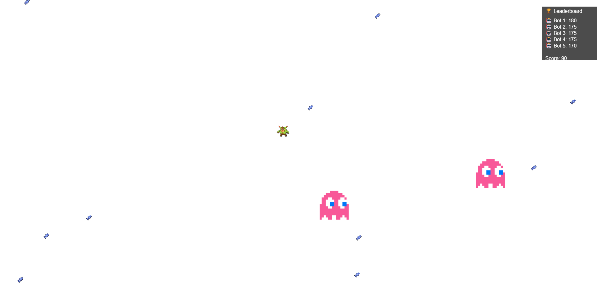

Mes Projets
Jeu ludo-pédagogique
Le but du projet était de créer un jeu ludo-pédagogique en java en groupe de 2. Le jeu était un escape game dans un manoir abandonné, où l'utilisateur se baladait salle en salle en répondant à des questions. Les graphismes étaient réalisés en code ASCII directement dans le terminal.
| Compétences | Java | Travail en équipe |
|---|
Classification de données
Le but de ce projet était de réaliser une application où nous pouvions charger des données tels que des iris et des Pokémons pour les voir s'afficher ensuite sur un nuage de point.
| Compétences | Java | Java FX | Algorithme KNN |
|---|
Réussite
Jeu d'échec réalisé sur terminal, en équipe de 6 en 3 jours tout en suivant la méthodologie agile.
| Compétences | Java | Développement Agile | Travail en équipe |
|---|

Aggron.io
Un agario en version solo et avec des bots
| Compétences | JavaScript | Travail en équipe |
|---|